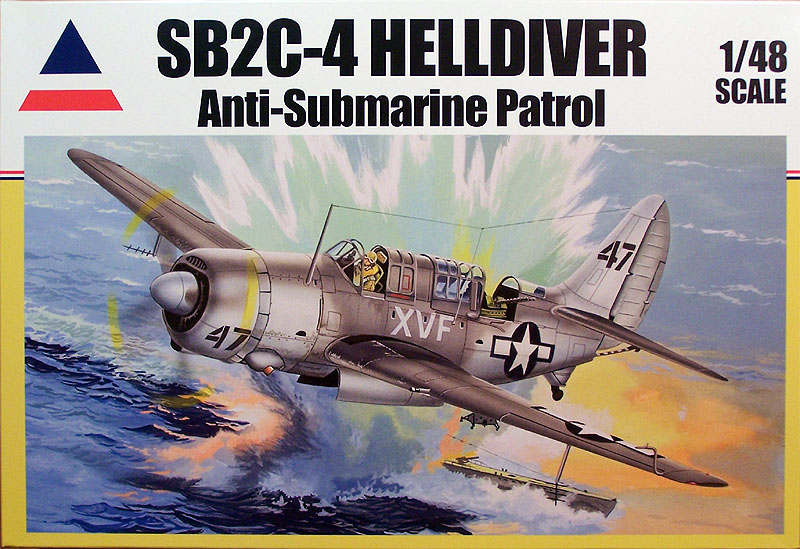
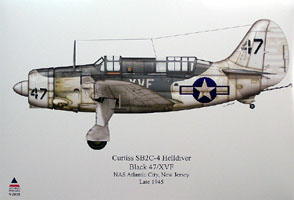
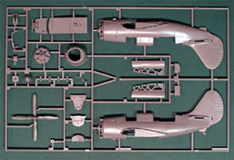
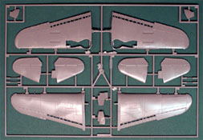
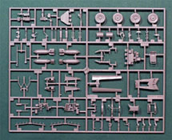
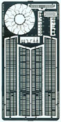
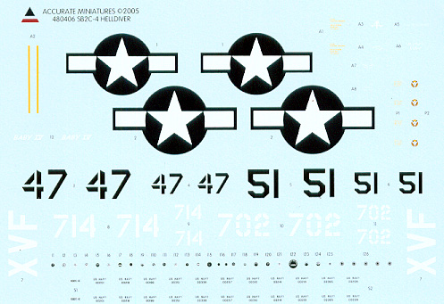

{kind=link}
{kind=link}
{kind=link}
{kind=link}
{kind=link}
{kind=link}


Accurate Miniatures 1/48 SB2C-4 Helldiver

Kit #480406
MSRP $39.95
Images and text Copyright © 2005 by Matt Swan
Developmental Background
In 1938 six aircraft manufactures responded to a Navy request for what was to become the last operational diver bomber to be placed in active service. The prototype offered up by the Curtiss Company won the contract and the initial prototype dubbed XSB2C was first flown in November of 1940 – more than a year before the United States was to enter into World War Two.
The Helldiver was a large, impressive and powerful aircraft intended to replace the SBD Dauntless but early on in it’s development it became apparent that there were serious problems with its design. The Helldiver’s handling was poor; it had unsatisfactory low-speed stability, and dangerously poor stalling characteristics. Shortly after its introduction to service it was being referred to as "Son of a Bitch, Second Class". It was not until the introduction of the -4 model in 1944 that the early promise of the aircraft was realized. Dive stability had been greatly improved by further perforating the dive flaps and bugs in the overly complex hydraulic system had been worked out. As aircrews became more familiar with the machine and developed more faith in it the nickname became “the big tailed beast” or more simply “the beast”.
The Helldiver was delivered in large numbers (7,140), equipped many US Navy squadrons and inflicted a lot of damage on the enemy. The SB2C sank more enemy shipping in the Pacific war than any other US or Allied aircraft. It could carry up to 1,000 pounds of bombs in its bomb bay plus another 1,000 pounds externally, under the wings. It also carried two fixed 20mm cannons in the wings, and two .30 caliber machine guns in the rear cockpit. It was faster than the SBD, could carry drop fuel tanks for long range missions and on at least one mission two pods of dual 50 cal machine guns were hung under the wings. After World War II some surplus aircraft were sold to the navies of France, Italy, Greece, Portugal and Thailand. This was the last significant military contract handled by Curtiss and the company went into a decline that resulted in it being only a specialty supplier to the industry.
The Kit
In 1966 Monogram produced the first Helldiver model kit (SB2C-5) as one of those action models with folding wings, folding landing gear and lots of raised rivet detail. For 1966 this was an above industry standard kit but by today’s standards it was hardly worth dusting off the box. In the late 1990s Revell-Monogram revisited the Helldiver concept with new molds and the introduction of Eduard photo etched parts. This kit was released under their Pro-Modeler logo and was a great kit. Later they leased the molds to Hasegawa who ran a short run under their nametag and now in 2005 molds have gone to Accurate Miniatures for release under their nametag. Accurate Miniatures has gone a little further than just doing another repop of an existing kit. They have this coming out in two packages; first is a straight repop of the original molds with new decals and instructions for Atlantic ASW II scheme flying from NAS Atlantic City New Jersey and second is an attempt to do an earlier SB2C-2 version where they have included a new sprue that replaced the propeller and spinner. Here we are looking at the -4 version.

The kit comes in a huge box where parts are carefully separated from each other and from the decals and clear parts. Inside the box is a separator with an excellent piece of full color artwork for the ASW scheme. You may click on the small image at right to view a larger picture. All the plastic kit parts are molded in good quality medium gray plastic with fine recessed panel lines and some raised detail where appropriate. The single sprue of clear parts demonstrates good clarity and has well defined raised frame lines and rivet details. Interior detail is quite good and makes for a busy looking front office. Dash instrumentation can be painted or kit supplied decals can be used. The engine face gets an additional boost with the Eduard PE wiring harness. The bomb bay can be modeled open or closed but the only weapons load offered is a couple of bombs.
Looking at the plastic pieces in general we have some minor flash around the gunner’s station, no obvious sink marks or injector pin markings and few mold separation lines. We have one hundred nine gray plastic pieces, six clear parts and twenty eight photo etched pieces for a grand total of one hundred forty three pieces in the box.




You may click on the small images above to view larger pictures
Decals and Instructions
The instructions with this kit are classic Accurate Miniatures stuff – this is a booklet of information that begins with a very nice historical background of the aircraft and a complete paint chart listing paints by federal standard numbers and seven different specific paint manufacturers. This is followed by fifteen pages of exploded view construction steps with color call outs aplenty and many construction tips. The final two pages cover exterior painting instructions and decal placement guides.

The kit decals are very nice, here we have markings for two aircraft. First is the ASW II scheme that is shown on the initial box art and second is a tri-color scheme for VMSB 244. Included on the sheet are propeller markings, service stencils, warning markings, many instrument markings for the dash and several extra aircraft numbers that allow for the modeler to push the envelop slightly. As with all previous decals offered by AM these are nicely thin with perfect registry and good color density. I’ve used their decals before and can testify that they behave nicely with all common setting solutions.
Conclusions
When this kit can out under the Pro Modeler name tag it was an outstanding kit and that holds true with this offering. The addition of the ASW markings is what finally drove me to acquire one for my collection. It seems to make sense that AM should include this in their lineup with the recent release of the Vindicator – now the dive bomber line is pretty much complete. The kit is not perfect, we do not have an easy option to drop the dive flaps or to fold the wings and as yet the aftermarket industry has not risen to the challenge. There are a few items available at this time such as additional photo etched detail sets from Eduard and Tom’s Model Works and replacement resin seats from Ultracast. Easy Mask has a set of masks available and Engines and Things offers a resin replacement engine.
Overall this is a good kit and well worth having in your collection – I give it a good recommendation.